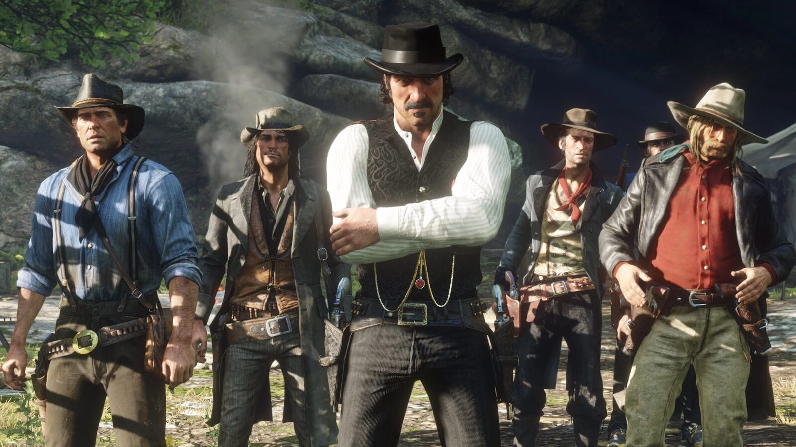

News · Industry Red Dead Redemption 2 Passes 87 Million Copies On August 7, 2026, Take-Two reported that Red Dead Redemption 2 has now sold more than 87 million units. It is the clearest measure yet of why a third Red Dead is a question of when, not if. Here are the figures, and what they do and do not tell us about RDR3. August 10, 2026 By Joseph Lambert 5 min read  The numbers from Take-Two's report Take-Two Interactive published its first-quarter results for fiscal year 2027 on August 7, 2026. The report puts lifetime sales of Red Dead Redemption 2 at more than 87 million units, and Grand Theft Auto V at more than 230 million. Take-Two reported net bookings of 1.39 billion dollars for the quarter, and reiterated a full-year outlook of 8 to 8.2 billion. The same report confirmed that Grand Theft Auto VI launches on November 19, 2026, with an extended look due on August 27. GTA VI is the company's priority, and its pre-orders were described as unprecedented. An eight-year-old game still climbing Red Dead Redemption 2 was released in October 2018. This site covered it passing 70 million units in February 2025, and 63 million before that. The jump to 87 million is about 17 million copies in roughly eighteen months, a faster pace than the game had held in earlier years. It ranks among the best-selling games ever made. The commercial case for RDR3 A single-player game selling at this rate, eight years after release, is a near-certain sequel candidate. Take-Two has repeatedly described Red Dead as a permanent franchise. Publishers do not retire properties that sell like this. The 87 million figure is a fact; the sequel it points to is a strong inference, not a confirmed plan. What a third game would cost Rockstar has never disclosed Red Dead Redemption 2's budget. Post-launch estimates from the trade press put the combined development and marketing cost between roughly 370 and 540 million dollars, with one widely cited VentureBeat estimate near 540 million, about half of it marketing. RDR2 sits at the top of Wikipedia's list of the most expensive games ever made. Every figure in this paragraph is an estimate, not a number Rockstar confirmed. On that basis, a third Red Dead would be greenlit at the same tier or higher. Development costs across the industry have risen since 2018, and Take-Two operates at a scale where a single release, GTA VI, is forecast to drive more than 8 billion dollars in bookings. The reasonable read is that RDR3 would be a several-hundred-million-dollar production. That is a statement about scale. No budget figure for RDR3 exists, and inventing one would be guesswork. What it does not tell us None of this is a signal about timing. Rockstar has not announced Red Dead Redemption 3, and the studio is locked onto GTA VI through its November launch and the support period that follows. Strong RDR2 sales strengthen the long-term case for a third game; they say nothing about the near-term schedule. The honest summary: Take-Two reported a real milestone, 87 million units, and it makes RDR3 more likely as an eventual project, not sooner as a dated one.